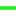

<!doctype html>
<html lang="en">
    <head>
        <meta charset="utf-8">
        <meta http-equiv="X-UA-Compatible" content="IE=edge">
        <meta name="viewport" content="initial-scale=1,user-scalable=no,maximum-scale=1,width=device-width">
        <meta name="mobile-web-app-capable" content="yes">
        <meta name="apple-mobile-web-app-capable" content="yes">
        <link rel="stylesheet" href="css/leaflet.css">
        <link rel="stylesheet" href="css/L.Control.Layers.Tree.css">
        <link rel="stylesheet" href="css/qgis2web.css">
        <link rel="stylesheet" href="css/fontawesome-all.min.css">
        <style>
        #map {
            width: 1580px;
            height: 970px;
        }
        .leaflet-popup-content > table img {
width: 290px;
}
.leaflet-popup-content > img { /*for other leaflet maps you can add rule as well*/
width: 290px;
}
        </style>
        <title>Cycle Paths and Parking on roundtrip from Home to UCC</title>
    </head>
    <body>
        <div id="map">
        </div>
        <script src="js/qgis2web_expressions.js"></script>
        <script src="js/leaflet.js"></script>
        <script src="js/L.Control.Layers.Tree.min.js"></script>
        <script src="js/leaflet.rotatedMarker.js"></script>
        <script src="js/leaflet.pattern.js"></script>
        <script src="js/leaflet-hash.js"></script>
        <script src="js/Autolinker.min.js"></script>
        <script src="js/rbush.min.js"></script>
        <script src="js/labelgun.min.js"></script>
        <script src="js/labels.js"></script>
        <script src="data/BikeParking_2.js"></script>
        <script src="data/CycleLanes_3.js"></script>
        <script>
        var map = L.map('map', {
            zoomControl:false, maxZoom:28, minZoom:1
        }).fitBounds([[51.884667553539835,-8.488788630576057],[51.91263055513785,-8.417541796705677]]);
        var hash = new L.Hash(map);
        map.attributionControl.setPrefix('<a href="https://github.com/tomchadwin/qgis2web" target="_blank">qgis2web</a> &middot; <a href="https://leafletjs.com" title="A JS library for interactive maps">Leaflet</a> &middot; <a href="https://qgis.org">QGIS</a>');
        var autolinker = new Autolinker({truncate: {length: 30, location: 'smart'}});
        // remove popup's row if "visible-with-data"
        function removeEmptyRowsFromPopupContent(content, feature) {
         var tempDiv = document.createElement('div');
         tempDiv.innerHTML = content;
         var rows = tempDiv.querySelectorAll('tr');
         for (var i = 0; i < rows.length; i++) {
             var td = rows[i].querySelector('td.visible-with-data');
             var key = td ? td.id : '';
             if (td && td.classList.contains('visible-with-data') && feature.properties[key] == null) {
                 rows[i].parentNode.removeChild(rows[i]);
             }
         }
         return tempDiv.innerHTML;
        }
        // add class to format popup if it contains media
		function addClassToPopupIfMedia(content, popup) {
			var tempDiv = document.createElement('div');
			tempDiv.innerHTML = content;
			if (tempDiv.querySelector('td img')) {
				popup._contentNode.classList.add('media');
					// Delay to force the redraw
					setTimeout(function() {
						popup.update();
					}, 10);
			} else {
				popup._contentNode.classList.remove('media');
			}
		}
        var title = new L.Control({'position':'topright'});
        title.onAdd = function (map) {
            this._div = L.DomUtil.create('div', 'info');
            this.update();
            return this._div;
        };
        title.update = function () {
            this._div.innerHTML = '<h2>Cycle Paths and Parking on roundtrip from Home to UCC</h2>';
        };
        title.addTo(map);
        var zoomControl = L.control.zoom({
            position: 'topleft'
        }).addTo(map);
        var bounds_group = new L.featureGroup([]);
        function setBounds() {
        }
        map.createPane('pane_GoogleSatellite_0');
        map.getPane('pane_GoogleSatellite_0').style.zIndex = 400;
        var layer_GoogleSatellite_0 = L.tileLayer('https://mt1.google.com/vt/lyrs=s&x={x}&y={y}&z={z}', {
            pane: 'pane_GoogleSatellite_0',
            opacity: 1.0,
            attribution: '',
            minZoom: 1,
            maxZoom: 28,
            minNativeZoom: 0,
            maxNativeZoom: 19
        });
        layer_GoogleSatellite_0;
        map.addLayer(layer_GoogleSatellite_0);
        map.createPane('pane_OpenStreetMap_1');
        map.getPane('pane_OpenStreetMap_1').style.zIndex = 401;
        var layer_OpenStreetMap_1 = L.tileLayer('https://tile.openstreetmap.org/{z}/{x}/{y}.png', {
            pane: 'pane_OpenStreetMap_1',
            opacity: 1.0,
            attribution: '',
            minZoom: 1,
            maxZoom: 28,
            minNativeZoom: 0,
            maxNativeZoom: 19
        });
        layer_OpenStreetMap_1;
        map.addLayer(layer_OpenStreetMap_1);
        function pop_BikeParking_2(feature, layer) {
            var popupContent = '<table>\
                    <tr>\
                        <td colspan="2"><strong>Sheltered</strong><br />' + (feature.properties['Sheltered'] !== null ? autolinker.link(String(feature.properties['Sheltered']).replace(/'/g, '\'').toLocaleString()) : '') + '</td>\
                    </tr>\
                    <tr>\
                        <td colspan="2"><strong>Number of berths</strong><br />' + (feature.properties['Number of berths'] !== null ? autolinker.link(String(feature.properties['Number of berths']).replace(/'/g, '\'').toLocaleString()) : '') + '</td>\
                    </tr>\
                    <tr>\
                        <td colspan="2"><strong>Berths occupied</strong><br />' + (feature.properties['Berths occupied'] !== null ? autolinker.link(String(feature.properties['Berths occupied']).replace(/'/g, '\'').toLocaleString()) : '') + '</td>\
                    </tr>\
                </table>';
            var content = removeEmptyRowsFromPopupContent(popupContent, feature);
			layer.on('popupopen', function(e) {
				addClassToPopupIfMedia(content, e.popup);
			});
			layer.bindPopup(content, { maxHeight: 400 });
        }

        function style_BikeParking_2_0() {
            return {
                pane: 'pane_BikeParking_2',
        rotationAngle: 0.0,
        rotationOrigin: 'center center',
        icon: L.icon({
            iconUrl: 'markers/BikeParking_2.svg',
            iconSize: [53.199999999999996, 53.199999999999996]
        }),
                interactive: true,
            }
        }
        map.createPane('pane_BikeParking_2');
        map.getPane('pane_BikeParking_2').style.zIndex = 402;
        map.getPane('pane_BikeParking_2').style['mix-blend-mode'] = 'normal';
        var layer_BikeParking_2 = new L.geoJson(json_BikeParking_2, {
            attribution: '',
            interactive: true,
            dataVar: 'json_BikeParking_2',
            layerName: 'layer_BikeParking_2',
            pane: 'pane_BikeParking_2',
            onEachFeature: pop_BikeParking_2,
            pointToLayer: function (feature, latlng) {
                var context = {
                    feature: feature,
                    variables: {}
                };
                return L.marker(latlng, style_BikeParking_2_0(feature));
            },
        });
        bounds_group.addLayer(layer_BikeParking_2);
        map.addLayer(layer_BikeParking_2);
        function pop_CycleLanes_3(feature, layer) {
            var popupContent = '<table>\
                    <tr>\
                        <td colspan="2"><p style="font-size:20px">' + (feature.properties['Description'] !== null ? autolinker.link(String(feature.properties['Description']).replace(/'/g, '\'').toLocaleString()) : '') + '</td>\
                    </tr>\
                    <tr>\
                        <td colspan="2">' + (feature.properties['Photo'] !== null ? '' : '') + '</td>\
                    </tr>\
                    <tr>\
                        <td colspan="2"><strong>Width in Metres</strong><br />' + (feature.properties['Width in Metres'] !== null ? autolinker.link(String(feature.properties['Width in Metres']).replace(/'/g, '\'').toLocaleString()) : '') + '</td>\
                    </tr>\
                    <tr>\
                        <td colspan="2"><strong>Road-facing Barrier</strong><br />' + (feature.properties['Road-facing Barrier'] !== null ? autolinker.link(String(feature.properties['Road-facing Barrier']).replace(/'/g, '\'').toLocaleString()) : '') + '</td>\
                    </tr>\
                    <tr>\
                        <td colspan="2"><strong>Obstructed</strong><br />' + (feature.properties['Obstructed'] !== null ? autolinker.link(String(feature.properties['Obstructed']).replace(/'/g, '\'').toLocaleString()) : '') + '</td>\
                    </tr>\
                    <tr>\
                        <td colspan="2"><strong>Closed</strong><br />' + (feature.properties['Closed'] !== null ? autolinker.link(String(feature.properties['Closed']).replace(/'/g, '\'').toLocaleString()) : '') + '</td>\
                    </tr>\
                    <tr>\
                        <td colspan="2"><strong>Markings</strong><br />' + (feature.properties['Markings'] !== null ? autolinker.link(String(feature.properties['Markings']).replace(/'/g, '\'').toLocaleString()) : '') + '</td>\
                    </tr>\
                    <tr>\
                        <td colspan="2"><strong>Condition Overall</strong><br />' + (feature.properties['Condition Overall'] !== null ? autolinker.link(String(feature.properties['Condition Overall']).replace(/'/g, '\'').toLocaleString()) : '') + '</td>\
                    </tr>\
                    <tr>\
                        <td colspan="2"><strong>Contraflow</strong><br />' + (feature.properties['Contraflow'] !== null ? autolinker.link(String(feature.properties['Contraflow']).replace(/'/g, '\'').toLocaleString()) : '') + '</td>\
                    </tr>\
                    <tr>\
                        <td colspan="2"><strong>Length in Metres</strong><br />' + (feature.properties['Length in Metres'] !== null ? autolinker.link(String(feature.properties['Length in Metres']).replace(/'/g, '\'').toLocaleString()) : '') + '</td>\
                    </tr>\
                    <tr>\
                        <td colspan="2"><strong>Cleanliness</strong><br />' + (feature.properties['Cleanliness'] !== null ? autolinker.link(String(feature.properties['Cleanliness']).replace(/'/g, '\'').toLocaleString()) : '') + '</td>\
                    </tr>\
                </table>';
            var content = removeEmptyRowsFromPopupContent(popupContent, feature);
			layer.on('popupopen', function(e) {
				addClassToPopupIfMedia(content, e.popup);
			});
			layer.bindPopup(content, { maxHeight: 400 });
        }

        function style_CycleLanes_3_0() {
            return {
                pane: 'pane_CycleLanes_3',
                opacity: 1,
                color: 'rgba(24,245,16,1.0)',
                dashArray: '',
                lineCap: 'square',
                lineJoin: 'bevel',
                weight: 5.0,
                fillOpacity: 0,
                interactive: true,
            }
        }
        map.createPane('pane_CycleLanes_3');
        map.getPane('pane_CycleLanes_3').style.zIndex = 403;
        map.getPane('pane_CycleLanes_3').style['mix-blend-mode'] = 'normal';
        var layer_CycleLanes_3 = new L.geoJson(json_CycleLanes_3, {
            attribution: '',
            interactive: true,
            dataVar: 'json_CycleLanes_3',
            layerName: 'layer_CycleLanes_3',
            pane: 'pane_CycleLanes_3',
            onEachFeature: pop_CycleLanes_3,
            style: style_CycleLanes_3_0,
        });
        bounds_group.addLayer(layer_CycleLanes_3);
        map.addLayer(layer_CycleLanes_3);
        map.on("zoomend", function(e) {
            if (map.getZoom() <= 19 && map.getZoom() >= 13) {
                map.addLayer(layer_BikeParking_2);
            } else if (map.getZoom() > 19 || map.getZoom() < 13) {
                map.removeLayer(layer_BikeParking_2);
            }
        });
            if (map.getZoom() <= 19 && map.getZoom() >= 13) {
                map.addLayer(layer_BikeParking_2);
            } else if (map.getZoom() > 19 || map.getZoom() < 13) {
                map.removeLayer(layer_BikeParking_2);
            }
        var overlaysTree = [
            {label: ' CycleLanes', layer: layer_CycleLanes_3},
            {label: ' BikeParking', layer: layer_BikeParking_2},
            {label: "OpenStreetMap", layer: layer_OpenStreetMap_1},
            {label: "Google Satellite", layer: layer_GoogleSatellite_0},]
        var lay = L.control.layers.tree(null, overlaysTree,{
            //namedToggle: true,
            //selectorBack: false,
            //closedSymbol: '&#8862; &#x1f5c0;',
            //openedSymbol: '&#8863; &#x1f5c1;',
            //collapseAll: 'Collapse all',
            //expandAll: 'Expand all',
            collapsed: true,
        });
        lay.addTo(map);
        setBounds();
        </script>
    </body>
</html>
